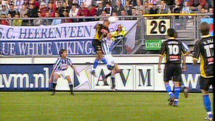
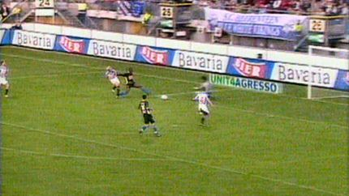

|
SC Heerenveen - Roda JC (3-4) 21 augustus 2004 |
SC
Heerenveen - Roda JC (3-4) 21 augustus 2004
Door de schorsing van Bodnar staat Senden automatisch in de basis
die hier een op maat gesneden voorzet verzendt naar het hoofd van
Cristiano.

0-1, (7'): Cristiano.
Schitterende omhaal van Huntelaar: 1-1, (30').

Even later trekt Kone de 16 meter binnen om koel en behendig
2-1
binnen te tikken, (33').
De gelijkmaker door Seip vanuit buitenspelpositie en bovendien
hands, (73').
De terechte protesten van Roda.

Een op de paal geschoten bal van Kone stuitert terug in het
veld
waarna Sonko de bal oppikt en prachtig inschiet: 2-3, (78').
Mooie kopbal van Rose: 3-3 (85').
Een vrijetrap van Van Dessel belandt voor de voeten van
Brouwers
die de bal binnenschuift: 3-4 (90').
Voor het eerst in 14 jaar valt er een zege van Roda te
bejubelen in
Heerenveen!